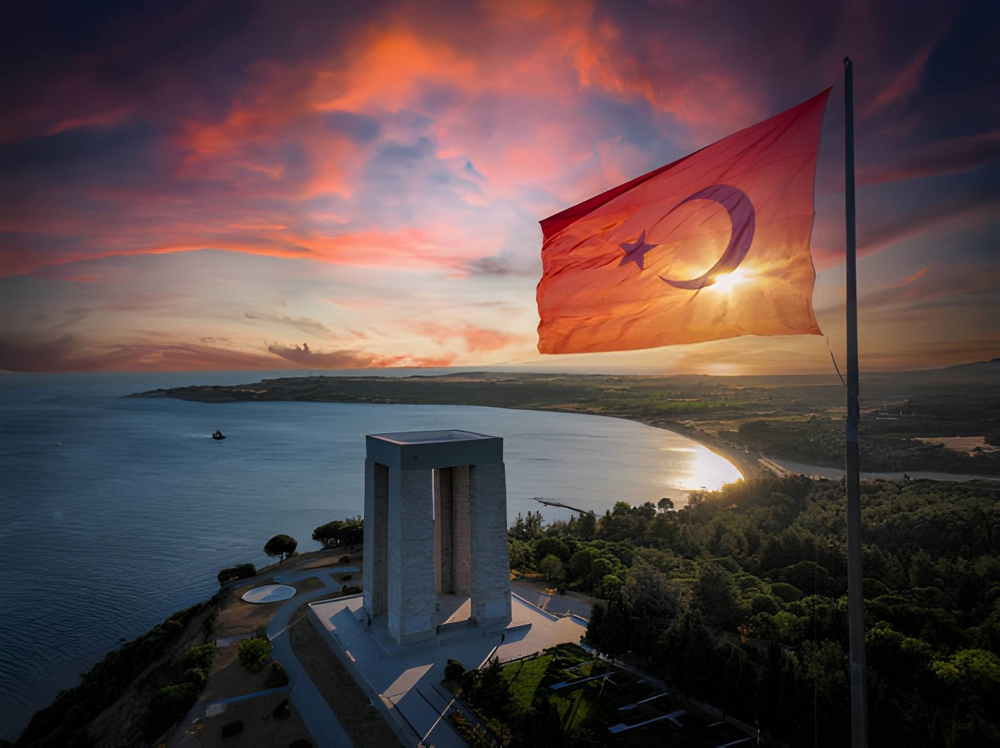

Tarihin en şanlı destanının yazıldığı topraklarda unutulmaz bir deneyim.
Çanakkale Cumhuriyet Meydanı'nda Tarihi Top'un önünde rehberimizle buluşuyoruz.
Çanakkale iskeleden Kilitbahir feribotuyla boğazın karşı yakasına, Kilitbahir'e geçiyoruz.
Kilitbahir İskele ve Eceabat noktalarında diğer katılımcılarımızla buluşarak turumuza başlıyoruz.
Duraklarımız ziyaret sırasına göre takip edilmektedir.